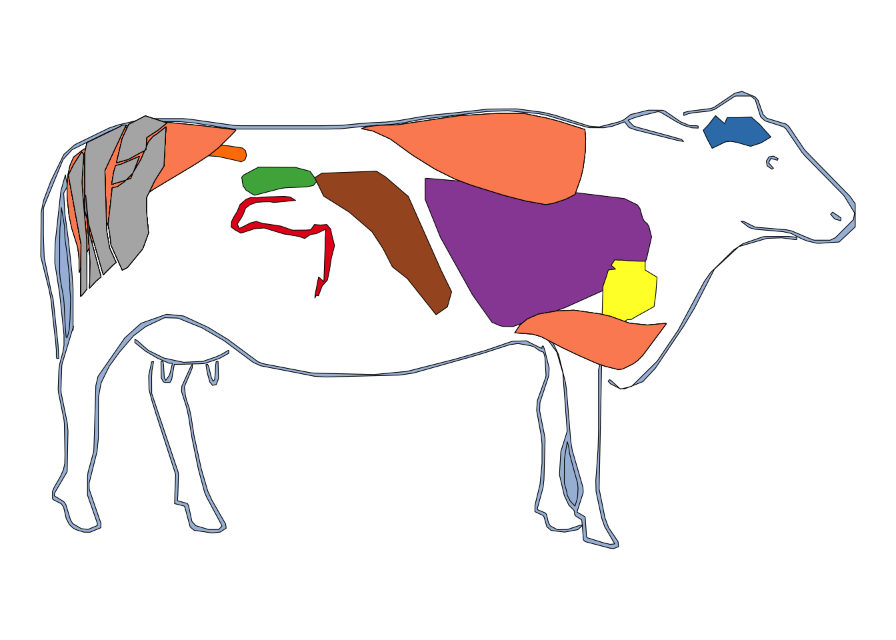

gganatogram package
The gganatogram function of the package of the same name can be used to create anatogram atlases.
The package comes with four data sets:
- hgMale_key
- hgMale_key
- cell_key
- other_key.
Note: that you can also create your own data frame.
Installation
#install gganatogram
install.packages("remotes")
remotes::install_github("jespermaag/gganatogram")Male
library(tidyverse)
library(gganatogram)
# plot male human
gganatogram(data = hgMale_key,
organism = "human", sex = "male",
fill = "colour", fillOutline = "#FFCDD2") +
theme_void() +
coord_fixed()
Female
The process for creating a human female anatogram is analogous to the
male anatogram, but passing the hgFemale_key data frame and
specifying sex = "female".
library(gganatogram)
gganatogram(data = hgFemale_key,
organism = "human", sex = "female",
fill = "colour", fillOutline = "#FFCDD2") +
theme_void() +
coord_fixed()Zoom
In case you need to make zoom to a specific part of the anatogram you
can use coord_cartesian. Recall to remove the
theme_void if you want to see the axes values.
library(gganatogram)
gganatogram(data = hgMale_key,
organism = "human", sex = "male",
fill = "colour", fillOutline = "#a6bddb") +
coord_cartesian(xlim = c(30, 75), ylim = c(-40, 0)) +
theme_void()
Systems
The default plot displays all the body systems, but you can specify
only some of them. You can also set outline = FALSE to only
plot the systems. Type hgMale_key$type or
hgFemale_key$type to see the available options.
library(gganatogram)
library(dplyr)
hgMale_key %>%
filter(type %in% "nervous_system") %>%
gganatogram(organism = "human", sex = "male",
fill = "colour", outline = FALSE) +
theme_void() +
coord_fixed()Organs
Similarly to plotting some systems you can plot only some organs.
Type hgMale_key$organ or hgFemale_key$organ
for a list containing the organ names.
library(gganatogram)
library(dplyr)
# display brain and heart
hgMale_key %>%
filter(organ %in% c("brain", "heart")) %>%
gganatogram(organism = "human", sex = "male",
fill = "colour") +
theme_void() +
coord_fixed()
Color scale
The color scale can be customized based on the values column of the data frames and adding a continuous color scale, such as viridis.
library(gganatogram)
# use the demo value or if you have your own data just merge it to the data frame before plotting
gganatogram(data = hgMale_key,
organism = "human", sex = "male",
fill = "value",
fillOutline = "#a6bddb") +
theme_void() +
scale_fill_viridis_c() +
coord_fixed()Other organisms
You can also specify more organisms, such as mice, cells and other animal species. Note that you can apply the same customization to the following anatograms that the ones described in the previous section.
mouse
library(gganatogram)
# plot mouse gganatogram
gganatogram(data = mmFemale_key,
organism = "mouse", sex = "female",
fillOutline = "#a6bddb", fill = "colour") +
theme_void() +
coord_fixed()cell
library(gganatogram)
# plot cell gganatogram
gganatogram(data = cell_key$cell,
organism = "cell",
fillOutline = "#a6bddb", fill = "colour") +
theme_void() +
coord_fixed()
other_key
The other_key list contains 24 data frames with different organisms. In the following examples we selected some of them but recall that there are more options available to choose.
## # A tibble: 24 × 1
## value
## <chr>
## 1 anolis_carolinensis
## 2 arabidopsis_thaliana
## 3 bos_taurus
## 4 brachypodium_distachyon.flower_parts
## 5 brachypodium_distachyon.whole_plant
## 6 gallus_gallus
## 7 hordeum_vulgare.flower_parts
## 8 hordeum_vulgare.whole_plant
## 9 macaca_mulatta
## 10 monodelphis_domestica
## # … with 14 more rowslibrary(gganatogram)
# plot Bos taurus gganatogram
gganatogram(data = other_key$bos_taurus,
organism = "bos_taurus", sex = "male",
fillOutline = "#a6bddb", fill = "colour") +
theme_void() +
coord_fixed()
library(gganatogram)
# plot Gallus gallus gganatogram
gganatogram(data = other_key$gallus_gallus,
organism = "gallus_gallus", sex = "male",
fillOutline = "#a6bddb", fill = "colour") +
theme_void() +
coord_fixed()